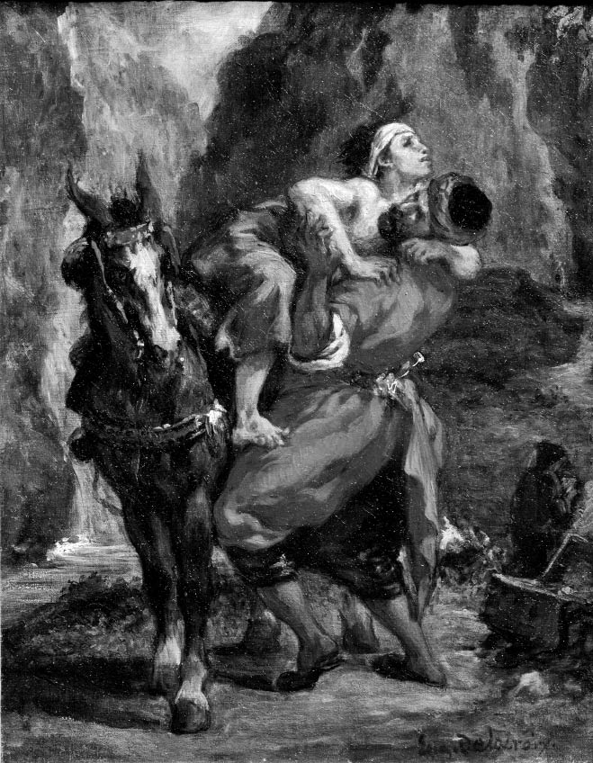

Can sıkıcı davranışlar,
can sıkıcı sorular
Bir anlayışa göre ahlak sadece kaybedenler içindir; onun yolunuzun üstünde durmasına izin vermek enayiliktir; diğer insanlar sizi yere sermeye hazır, öyleyse ilk darbeyi vuran siz olun. İşte Platon’un Devlet adlı diyaloğunda, Sokrates’in karşı çıktığı tutum budur.
Yaptığınız Yanınıza Kâr Kalırsa
Sokrates sorunu, diyalogdaki karakterlerden Glaukon’un anlattığı Gyges’in Yüzüğü mitinde dramatize eder. Bu mitte çoban Gyges takanı görünmez kılan bir yüzük bulur. Yüzüğü takarak kraliyet sarayına girer, kraliçeyi baştan çıkarır ve kralı öldürüp yerine geçer. Bu Gyges’in bakış açısından mükemmel bir sonuçtur. Kim aynısını yapmazdı ki?
Şimdi böyle iki yüzük olsa birini ahlaklı diğerini ahlak tanımaz kişi parmağına takmış olsaydı; hiçbiri, çarşıdan canının çektiğini korkusuzca almak, evlere girip gönlünün çektiğiyle sevişmek, istediğini öldürmek, istediğini hapisten kurtarmak, böylece insanlar arasında bir tanrı kesilip gönlünün istediğini yapmak dururken, doğruluktan ayrılmayacak, başkasının malına el sürmemek yiğitliğini gösterecek kadar sağlam yaratılışlı olmazdı herhalde.
Başka bir deyişle, ahlaklılığı sonuçlarından ayırdığınızda, insanlar ahlakı bir detay, eylem özgürlüklerini kısıtlayan can sıkıcı bir fren olarak göreceklerdir.

İYİ SAMİRİYELİ (1850)
Eugène Delacroix (1798-1863)
Bu anlayışın ima ettiği psikoloji teorisi şudur: Bizler etiğin buyruklarına yalnızca ona uymak çıkarlarımıza uygunsa ya da başka türlü hareket etmekten korkuyorsak boyun eğeriz. Toplum içimize bu tür korkular salmada çok ustadır: Ne de olsa bizim Gyges yüzüklerimiz yok. Gündelik yaşamın olağan akışı içinde dürüstlük kuşkusuz en iyi politikadır. Üçkâğıtçılar ve yalancılar tespit edilerek cezalandırılır. Ne yazık ki hatırı sayılır sayıda insan, erdemin “sefa yolu”ndan saptıklarında yaptıklarının yanına kâr kalacağını düşünme ayartısına kapılmaktadır. Bazı kimseler bazı durumlarda bu riske girilebileceğini düşünmektedir. Ve erdemden daha az dramatik sapmalar neredeyse yorumsuz geçiştirilmektedir. İşadamları sahtekârlıktan hapse girdikleri halde, açgözlülükten, hasetten veya kibirden dolayı girmemektedir.
Sokrates ve Sokrates sonrası klasik çağ filozofları bu son derece güç soruna çözüm bulmak gibi soylu bir çabaya girişmişler ve Glaukon’un öyküsüne rağmen erdemli yaşamın mutlulukla örtüştüğünü göstermeye çalışmışlardır. Bir an için toplumun verdiği cezaları ve ödülleri dikkate almayalım. Biz kötü davrandığımızda bunu kişisel huzurumuz veya iyiliğimiz pahasına yaparız. Bu iyimser görüşe göre, kötüler rahat uyuyamazlar. Yaptıklarından memnuniyet ve gurur duymazlar. Shakespeare’in III. Richard’ı veya Macbeth’i gibi, suçlarının ve günahlarının anıları bir hayalet gibi üstlerine çöker. Kurbanlarının sızlanmaları gecelerini kâbusa çevirir. Bu insan vicdanının haksızlık yapanlardan aldığı intikamdır.
Esenlik
Buna inanmak hoş olurdu, ama bu maalesef çoğunlukla doğru değildir. Bir yığın kötü deliksiz uyur; hatta “it iti ısırır” yasası altında yaşamada gösterdikleri yetenekle gurur bile duyarlar (Gyges’in yaptıklarından sonra atacağı o kahkahayı düşünüyor insan). Ya da yaptıkları yanlışlıklara karşı duyarsız kalabilirler, zira yaşamın üzücü gerçeklerinden biri zorbaların kendilerini her zaman zorba olarak görmemeleridir; keçi inatlı biri kendisinin makul biri olduğunu düşünür; zulüm kendisini merhamet örtüsüyle saklayabilir. İnsanlar zayıflıklarını görmeme eğilimindedir. Hatta yoldan çıktığını bilenler, yani bir yanlışın ayartısına kapıldığının farkında olanlar bile, yaptıklarının yanlarına kâr kaldığını gördüklerinde yüzlerinde mutlu bir sırıtmayla dolaşmaya devam ederler.
Nasıl erdemsizin esenlik içinde olmadığı her zaman doğru değilse, erdemli olanın da daima esenlik içinde olduğu doğru değildir. Klasik öğretinin bu diğer yüzü de pek inandırıcı değildir. Kimileri gerçekten çok iyi davranışlarda bulunurlar, ama daha iyisini yapabilirdim inancıyla kendilerine zulmederler. Aşırı iyi kimseler işleri kafalarına daha çok takarlar ve gerçekte kendilerinin suçları olmayan olaylar yüzünden kendilerini suçlayabilirler. Ya da hatasız davrandıkları halde şansızlıkları yüzünden acı çekebilirler. Bu yüzden önlerine çıkan akıl çelici fırsatları değerlendirmedikleri için pişmanlık duyabilirler. Başkalarının açık bir kötü sonuca yol açmadan bu fırsatları değerlendirdiklerini görerek üzülebilirler. Örneğin, kendilerini dürüstlüklerinin kurbanı olarak görebilirler. Sokrates’in izinden giden Stoacılar erdem ve mutluluk arasındaki ilişkiyi hiç de inandırıcı olmayan bir öğretide birleştirmişlerdir. Onlara göre, iyi insana zarar verilemez; onun erdemi sarsılmaz olduğundan mutluluğu dışsal şoklardan ve kazalardan etkilenmez. Bu yüce ideal ne kadar çekici olsa da biraz gerçekçi bir bakış, iyi insanın aslında incinmeye ne kadar açık olduğunu gösterir. Eski Ahit’teki Eyüp Kıssası, sonunda sihirli bir dokunuşla her şey halledilse de, zarar gören iyi bir insanın öyküsüdür.
Eğer erdemin mutlulukla çakışması bir şans meselesiyse, neden erdemli olalım ki? Bazı dinlerin buna hazır bir cevabı vardır: Erdemli olursanız, Tanrı sizi öteki dünyada ödüllendirecektir. Erdemli değilseniz o zaman da orada payınıza düşen ıstırap olacaktır. Aşağıdaki adaletsizlik yukarıdaki âlemde, ölümden sonraki başka bir boyutta karşılığını bulacaktır. Bu çocukları korkutmak için iyi bir hikâye olsa da, ona inanmamız için hiçbir iyi neden yoktur. Madem bu evrenin yaratıcısı adaleti bu kadar önemsiyor, öyleyse, yarattığı bu evren adalete neden bu kadar kayıtsız? Neden bu evrende aradığımızı bulamıyoruz? Ahlaki güdülenme meselesini burada çözmek istiyoruz; doğruluk, dürüstlük gibi erdemlere sırf kendileri için bağlanmak istiyoruz. Bunları ölümden sonra verilecek ödüller ve cezalarla ilişkilendirmek aslında bizim kendi çıkarlarımızdan başka bir şeyin peşinde olmadığımızı iddia eden tabloya bir süs daha eklemektir. Aranan doyum belirsiz bir geleceğe bırakılmış olsa da sonuçta bu da bencilce bir davranıştır.
Soru Tek mi Çok mu?
İlk sorumuza ne klasik ne de Hıristiyan gelenek doyurucu bir cevap sağlıyor. Daha iyi bir cevap bulmak için soruyu sorgulamakla başlayabiliriz (tipik bir felsefi manevra). Bu soru niçin soruluyor? Bu soruyu insanlar niçin, “Niçin müziksever olmalıyım?” ya da “Niçin sağlıklı görünmeliyim?” ya da “Niçin çocuklarımın yetişmesine yardımcı olmalıyım?” gibi sorulardan daha acil bir soru olarak görüyorlar? Burada şöyle bir varsayım işbaşındaymış gibi görünüyor: Ahlaki güdülenmede onu insana has diğer güdülenme biçimlerinden ayıran daha özel, daha gizemli bir şey vardır. Ama bu varsayım doğru mu?
David Hume meseleyi kısmen bize hepimizin bildiği şeyleri hatırlatarak inceler. Mesela bizler birinin bizim hakkımızda ne zaman iyi ne zaman kötü konuştuğunu biliriz. Akıllı, dikkatli, adil, cesur, dost canlısı, işbirliğine açık, ödevine bağlı ve dürüst biri olduğumuz söylendiğinde bundan memnuniyet duyar ve karşımızdakine teşekkür ederiz. Oysa aptal, kaprisli, korkak, bencil, işbirliğinden kaçan, sorumsuz ve sahtekâr biri olduğumuz söylendiğinde eleştirildiğimizi biliriz ve söyleyene teşekkür etmek aklımızın ucundan bile geçmez. Anadilimizle birlikte bu terimlerin “değer yüklü” anlamlarını da öğreniriz. Aynı durum birçok başka terim için de geçerlidir:
Öngörü, ihtiyatlılık, girişimcilik, çalışkanlık, usanmazlık, tutumluluk, düzenlilik, sağduyu, sağgörü, anlayış gibi isimlerinin değerlerinin kabul edilmesini dayattığı bu yetilerin yanı sıra en kararlı şüpheciliğin bile övülme ve beğenilme mükâfatını bir an için bile reddedemediği başkaları vardır. Ölçülülük, ağırbaşlılık, sabır, sebat, azim, ileriyi görme, saygınlık, ketumluk, düzenlilik, kinaye, eda, serinkanlılık, kavrayış çabukluğu, ifade kolaylığı; bunların ve aynı türde binden fazlasının mükemmellikler ve yetkinlikler olduğunu hiçbir insan asla reddedemeyecektir.
Bu özellikler takdir edildiğinden bunlar öğretilir. İyi yetiştirilecek kadar şanslıysak bu özellikleri benimseyerek ve içselleştirerek büyürüz. Sebatkâr biri oluruz, denemekten vazgeçmeyiz; sabırlı biri oluruz, geciken arkadaşımızı bekleriz; girişimci veya ihtiyatlı, gayretli veya tutumlu biri oluruz, bunlara uygun şekilde davranırız. “Neden?” diye sormamıza gerek kalmaz: Sadece yaparız.
Bu daha önemli bir şeye yol açıyor: “Neden iyi olmalı?” diye tek bir soru yok. “Yapmam gerekeni niçin yapmalıyım?” biçiminde bir soru yok. Burada sorunun “niçin yapmalıyım?” kısmındaki “yapmalıyım” aslında bize bir hükmü bildirir; burada duruma dair yeni bir delilden çok durum hakkındaki diğer olguların tartılmasından çıkarılan sonuç söz konusudur. Elbette tikel durumlarda baştan çıkarıcı bir şeye kapılan insanların tikel soruları olacaktır. “Bu cazip şey karşısında ve başkaları tarafından cezalandırılmama fırsatım varken şimdi ve burada neden iyi davranayım?” sorusu ortaya çıkabilir, ama bu her örnekte farklı bir biçime bürünür. “Olmak zorunda olmadığım halde niçin sebatkâr olmalıyım?” sorusu belirli bir ödevi olan biri açısından iyi bir soru olabilir, ama verilecek cevap için genel bir reçete yoktur. Her şey sebatkâr olmaya yüklenen anlama ve bağlama bağlıdır. Cevap bağlama göre değişir: “Çünkü söz verdim,” ya da “çünkü sebat etmezsem yandaşlarımı hayal kırıklığına uğratacağım,” ya da “sebat edersem sorunu çözebilirim.”
<>
“Olmak zorunda olmadığım halde niçin sebatkâr
olmalıyım?” sorusu belirli bir ödevi olan biri
açısından iyi bir soru olabilir, ama verilecek
cevap için genel bir reçete yoktur.
<>
Kendi Çıkarına Bakmak
Klasik yazarlara bakılırsa, bağlam ne olursa olsun, bu tür cevaplar, eğer en dipte failin kendi çıkarlarına dayanmıyorsa, eksik ve yetersizdir. Bu egoizmdir. Bu anlayışa göre pratik meselelerde “akli olan” tamamen kendi çıkarlarımızın peşine düşmektir. Ama bu kuruntudan başka bir şey değildir. Bir anneye “Yorucu bir günün ardından çocuğuna niçin masal okuyasın ki?” diye sorduğunuzu farz edin. Ondan alacağınız, “Çünkü çocuğum masal dinlemeyi çok seviyor” ya da “Çünkü çocuğumun buna ihtiyacı var” cevapları “Niçin masal okuyasın ki?” sorusuna verilebilecek tamamen yeterli ve bitirici cevaplardır. Anneler daha ileri gidip, “Çocuğumun isteklerini ve ihtiyaçlarını niçin dert edeyim ki?” diye pek sormazlar. Soranlar da bizi dehşete düşürür.
Ya da iyi bir askeri veya bir dernek üyesini düşünün. “Niçin üstüme düşeni yapmalıyım?” sorusu akıllarını karıştırabilir, ama “İşimiz bu,” ya da “Senden beklenen bu,” ya da “Eğer görevini yapmazsan bizi yüzüstü bırakmış olursun” gibi cevaplar tamamıyla uygun ve işler yolunda gittiği sürece de nihai cevaplardır. Pratik akıl yürütmenin kendi çıkarına göre maliyet-fayda hesabı yapan bir failde son bulacağı bir efsaneden başka bir şey değildir. Bizler toplumsal hayvanlarız; ilgilerimiz, neyse ki, kendimizle sınırlı değil. Kendimiz kadar başkalarına da özen gösterme kapasitesine sahibiz; “Ben”i “biz” ile değiştirebiliriz. Bu “biz” aile, dostlar, dernek, kabile, ülke, ya da genel olarak tüm insanlık olabilir. “Eğer şöyle-şöyle yaparsan bizi hayal kırıklığına uğratırsın” dememizden sonra bile birisi hâlâ “Eğer yapmazsam bunun bana ne faydası olur?” diye düşünmeye devam ediyorsa, bu abesle iştigal etmek olur.
Elbette daireyi genişletirsek ilgimiz biraz bulanık ve bazen biraz gönülsüz olabilir. Bizi doğrudan etkilemeyen şeyleri doğrudan etkileyenlerle aynı şevkle sevmeyebiliriz. Ahlaki bir buyruğa rağmen insanlar ilgilerini eşit bir şekilde dağıtamayabilirler. Bu bir anlamda bize yakın ve bizi doğrudan etkileyen bir olaydan, uzak bir olaya göre daha fazla korkmamıza benzer. Ama ilgilerimizi tam olarak eşitçe dağıtamadığımız gerçeği ilgilerimizi geniş bir alana yaymamızın imkânsız olduğu anlamına gelmez.
Uygun bir şekilde toplumsallaşan fail başkalarının seslerini “içselleştirir”: Aşağılık bir şey yaparsa tepki alacağını veya ezdiklerinin kızgınlık hissedeceğini bilir. Bunlar ister istemez dinlemek durumunda kaldığı içsel kılavuzlardır. Çok az da olsa davranışların bu içsel denetleyicilerinin seslerini duymayanlar vardır. Sosyal duygu eksikliği olanlar rasyonellik timsali olmaktan ziyade psikopat olma yolundadır.
Demek ki bir kişinin pratik akıl yürütmesi bir şeyi yapmanın ailesi için kötü olacağının keşfiyle bitebilir. Gelecekten ziyade geçmişe işaret ederek de sona erebilir. “X’e neden iyi davranmalıyım?” sorusuna son derece tatmin edici olan “Çünkü o benim için şunları yaptı” şeklinde bir cevap verilebilir. Şükran duygusunun, geçmişte verilen bir sözün ya da gönüllü olarak üstlenilmiş bir rolün gerektirdiği eylemin farkına varılması izlenecek seçeneğin belirlenmesi için kâfidir. Burada kişinin bunun kendisine veya başkalarına gelecekteki faydasını hesaplaması söz konusu değildir. Hayvanların da bu şekilde güdülenebildikleri kayda değer bir husustur. Ünlü bir deneyde, primatolog Franz van der Waal ve meslektaşları bir işi yapması için az bir ödül verilen başlıklı bir maymunun aynı iş için başka bir başlıklı maymuna daha fazla ödül verildiğini gördüğünde, adil davranmayan deneycilere kızdığını keşfetmişlerdir. Maymun daha az ödülle rahatına bakmamaktadır (iktisatçıların, bankacıların ve şirket yöneticilerinin “akılsız” bulacakları bir tavır).
Oradan Sana Bakıyor
Bu takdir ettiğimiz minnettarlık gibi psikolojik özelliklerin evrimsel uyumun sonucu olup olmadığından bağımsız bir meseledir. Evrimci bir bakışla bu özelliklere sahip olanların olmayanlara göre daha çok ürediği ve sonuçta bu özelliklerin “seçildiği” söylenebilir. Bu spekülasyonlar doğru olsa da meseleyi tam anlamıyla izah edemezler (bkz. İnsan Doğası Nedir?). Annenin yavrusuna sevgisi “evrimsel uyumun” sonucu olsa da anneler genleri değil, çocuklarını severler.
Buraya kadar her şey yolunda olsa da insan yaşamı bunlardan ibaret değildir. Kötü siyasi eylemlerin sonuçları bu suçu işleyenlere geri dönmeyebilir. Orman yasası “onlara karşı biz” durumlarında, “herkese karşı ben” durumlarında olduğundan daha aşikârdır. Machievelli, prensin, yani siyasi otoritenin, vatandaşlardan daha kötü davranmaya hazır olması gerektiğine uzun süre önce dikkat çekmiştir. Prens’in 18. bölümündeki sözlerine kulak verelim:
Dolayısıyla bir prensin sıraladığım niteliklerin hepsine sahip olması gerekli değildir, ama bunlara sahipmiş gibi görünmesi son derece gereklidir. Hatta daha da ileri gidip şunu belirteceğim: Bu niteliklere sahip olmak ve her zaman uymak zararlı, sahipmiş gibi görünmek ise yararlıdır. Sözgelimi, merhametli, sözüne sadık, insancıl, dindar görünmek yararlıdır, olmak da; ama zihnini öyle hazırlamalısın ki, olmaman gerektiğinde, tersine dönüşmeyi bilmeli ve bunu yapabilmelisin.
Siyaset kirli bir iştir. Siyasi bir liderin başarısı iktidarı elde etmesi ve elinde tutmasıyla, ya da başka ülkelerin hilafına kendi ülkesinin menfaatlerini savunmasıyla ölçülür. Bu durumda iyi bir liderin vicdanlı olması pek de istenen bir şey olmayabilir. Bu demokrasilerde bile böyledir. Belki de özellikle demokrasilerde böyledir. Demokratik rejimlerde kendilerine karşı suç işlenen ülke içindeki veya dışındaki insanlar oylarının hükümet açısından hiçbir öneminin olmadığı insanlardır. Bir siyasetçi bir anlaşmayı ihlal ettiğini, ya da savaş ilan etmeye karar verdiği ülkenin saldırgan niyetleri hakkında yalan söylediğini bilir. Bunu kurbanların da bildiğini bilir. Ama oy veren insanlar bilmediği, ya da bunu umursamadığı sürece, politikasının haklı olduğunda diretebilir.
Belki prensin Machiavelli’nin tavsiyesine uymasını engellemeye yetecek argümanlar bulamayabiliriz, ama bilgelik yolu sadece argümanlardan oluşmaz. Bu durumda bilgelik yolu bağımsız Medya’yı ve bu tür şeyler yapan liderleri “yüz karası” olarak niteleyen bir kültüre sahip insanları içerir.
İnsanlar başlangıçta argümanlara karşı sağır olsalar da yaşananlar yüreklerini burkabilir. Ticaret ve seyahatin faydalarından biri, insanların birbirleriyle temasa geçmesini sağlayarak onların “tecrit bariyerlerini” yıkmalarına yardımcı olmasıdır.
Diğer yandan, utanç verici Glencoe katliamına o özel dehşet havasını kazandıran yönlerden biri, planlanan gecede MacDonald klanının erkeklerini, kadınlarını ve çocuklarını katleden Campbell klanından kişilerin önceki ayı onların misafiri olarak geçirmiş olmalarıydı. Bu İskoç hukukunda, birinin güvenini suiistimal ederek cinayet işlemekti. Bu tür cinayetler diğer cinayetlerden daha iğrenç sayılır. Bu da doğru bir saptama gibi görünüyor. Görünen o ki insanlık dairemizi genişletmenin yolu birbirimizle kaynaşmak için elimizden geleni yapmaktan geçiyor.
Hiç farkında olmadığımız güçlerin eylemlerimizi argümanlardan daha fazla etkilediğini düşünmek için başka nedenler de var. Yakın zamanlarda yapılan bir deneyin sonucu tam da bu konuyla ilgilidir. Newcastle Üniversitesi psikoloji bölümünde ortak bir çay ve kahve makinesi vardı. İnsanların içtikleri çay ve kahve için küçük de olsa bir katkıda bulunmaları umuluyordu. Ne yazık ki insanların bunu pek umursadığı yoktu. Tıpkı vergi kaçıranlar gibi, içtiklerini beleşe getirmeyi tercih ediyorlardı. Sonunda bölüm elemanları her hafta değiştirdikleri bir fiyat listesi astılar. Yeni listede fiyatlar değişmiyordu, ama her hafta listenin üstünde ya çiçek ya da göz resmi bulunuyordu. Yüzler değişiyordu, ama gözler her zaman doğrudan izleyiciye bakıyordu. Listede gözlerin olduğu haftalarda ödenen para çiçeklerin olduğu haftalarda ödenen paranın 2.76 katıydı. Araştırmacılar etkinin büyüklüğü karşısında şaşırdıklarını söylüyorlar. Gözlendiğimizi hayal etmemize neden olan en küçük bir uyarıcının bile üçkâğıtçılık veya ihmalkârlık yapmamızı engellediği görülmektedir. Ödeme yapan kişilere gözlendiklerine ilişkin en küçük bir imada bile bulunulmamıştı. Ama bilinçli ya da bilinçsiz, onun düşüncesi bile sonuç almaya yetmişti. Belki de bu nokta dinin varlığını sürdürmesinin nedenini bulmaya çalışan evrimci açıklamalara yardımcı olabilir (bkz. Tanrı’ya İhtiyacımız Var mı?).
Umarım üç düşüncemiz “Neden İyi Olmalı?” sorusuna biraz açıklık getirmiştir. Birincisini yeni ifade ettik: Çoğunlukla gerekli olan “argüman” değil “deneyim”dir. İkincisi sıklıkla cevabın, toplumsal hayvan olmamız dolayısıyla bir kültür içinde biçimlenen doğalarımız tarafından verildiğidir. Üçüncüsü de tek bir soru olmadığıdır. Farklı bağlamlarda değişik kararlarla ve ayartılarla karşılaşan ayrı insanlar tarafından sorulabilen bir “sorular çokluğu” vardır. Hepsine yeten tek bir cevap yoktur, ne de nihai bir cevaba gerek vardır.